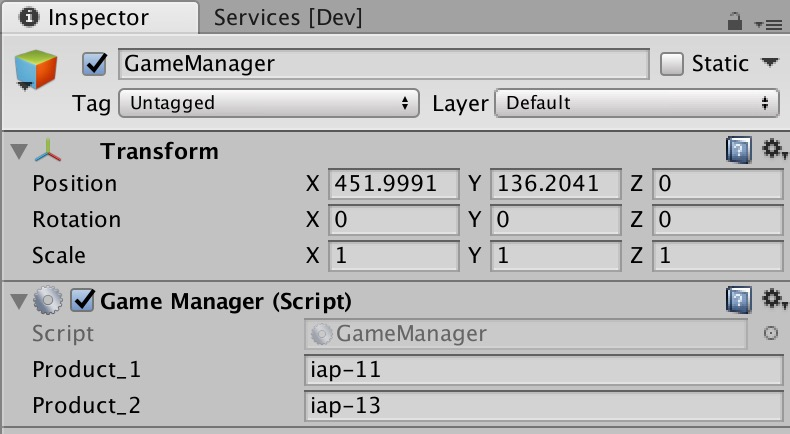

Configuring the SDK for UDP
Before publishing your games via unity distribution platform (UDP), configure the SDK and test your configuration. Here are the things that you need to do:
- Generating a Unity client and test accounts
- Configuring the in-app purchase (IAP) for UDP
- Testing your configuration
Generating a Unity client and test accounts
You can manage your games in UDP via a Unity client and test your games with test accounts. Take the following steps to generate a Unity client and test accounts:
Open Unity in the
INT，STAGING，orPRODenvironment. In thePRODenvironment, just open the Unity Editor; in theINTorSTAGINGenviroment, open Unity with the following demands:For Mac OS:
- open /Applications/Unity/Unity.app –args -cloudEnvironment dev
- open /Applications/Unity/Unity.app –args -cloudEnvironment staging
For Windows:
- C:/Program Files(86)/Unity/Editor/Unity.exe –args -cloudEnvironment dev
- C:/Program Files(86)/Unity/Editor/Unity.exe –args -cloudEnvironment staging
Log in with an
INT，STAGINGorPRODaccount. If you haven’t got anINTorSTAGINGaccount, register one in INT ID portal, STAGING ID Portal, or PROD ID Portal.Create or open a project and import the SDK.
Note: Make sure the project ID is consistent with the current environment. If not, clickUnlink projectand create a new Unity project ID.Create a
Game Settings.assetfile.
Click the
Game Settings.assetfile underAssets > Plugins > UnityChannel > UdpSupport > Resourcesand generate a Unity client and test accounts.
Configuring the IAP for UDP
Take the following steps to configure the IAP for UDP:
Choose
IAP Catalog(Window>Unity UDP>IAP Catalog).Input your product information and click
Create Productto sync with the server. To add more products, ClickAdd Product Draft.
Note: Specify the product price, or players can’t purchase products in game stores.
Click the
GameManagerGameObject inHierarchyand enter the slugs of your products intoProduct_1andProduct_2. You can add more products using theGameManager.csfile.
Testing the SDK for UDP
After you complete the configuration, test the SDK for UDP, as follows:
Open the
SampleScene.sceneasset to show the demo.Build and open the demo.
Click
Initand log in with a test account.
Click
BuyorBuy&Consumeto buy products. You can see the purchase information on the user interface.
If the purchased item hasn’t been consumed, you can’t purchase it again.
Click
QueryInventoryto see all the products and purchases and clickQuery&Consumeto consume the unconsumed purchases.